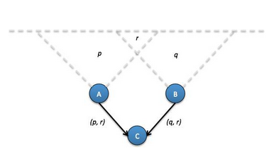
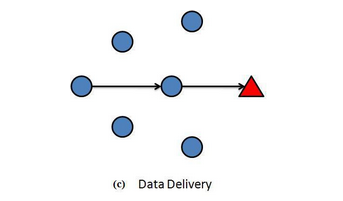

1.Introdução
As Redes de Sensores Sem-Fio (RSSF) representam um campo dinâmico em constante evolução na pesquisa e desenvolvimento tecnológico. Impulsionadas por avanços rápidos em micro-sistemas eletromecânicos (MEMS), redes de computadores e tecnologia de comunicação sem fio, as Redes de Sensores Sem-Fio (RSSF) emergem como uma das tecnologias de crescimento mais acelerado. Caracterizadas por dispositivos de baixo custo e consumo de energia reduzido, essa tecnologia tem despertado enorme interesse devido às suas potenciais aplicações em áreas tão diversas quanto sistemas de alerta para desastres, monitoramento ambiental, cuidados com a saúde, segurança, vigilância, detecção de intrusos, entre outras. Contudo, para uma implantação eficaz das RSSF, torna-se essencial o desenvolvimento contínuo de protocolos de roteamento específicos capazes de otimizar a comunicação entre os nós sensores.
Neste contexto, este trabalho tem como objetivo explorar e analisar os Protocolos de Roteamento em RSSF, destacando a importância vital desses protocolos na operação dessas redes. Os protocolos de roteamento desempenham um papel crucial nas RSSF, uma vez que são responsáveis por encaminhar os dados coletados pelos sensores até seus destinos, otimizando o uso de recursos escassos, como energia e largura de banda.
Esses protocolos de roteamento em RSSF têm como finalidade determinar o caminho mais eficiente e confiável para o envio de dados coletados pelos sensores até um ponto central de coleta ou outro destino designado. Eles são meticulosamente projetados levando em consideração as características únicas das RSSF, como a restrição de recursos, a mobilidade dos nós sensores e os desafios de comunicação em ambientes sem fio.
Eles podem ser classificados em diferentes categorias, tais como "Node centric," "Data Centric," "Source Initiated," e "Destination Initiated," cada qual adotando abordagens distintas para o roteamento de dados. Alguns protocolos priorizam a economia de energia, possibilitando que os sensores funcionem por períodos mais prolongados com suas limitadas baterias, enquanto outros enfatizam a eficiência na coleta de dados em aplicações específicas.
Adicionalmente, esses protocolos frequentemente incorporam técnicas de controle de tráfego, escalabilidade e redundância para garantir a entrega confiável de dados, mesmo em ambientes desafiadores.
A análise dos Protocolos de Roteamento em RSSF desempenha um papel de extrema importância, pois possibilita uma compreensão aprofundada de como essas redes podem ser eficazmente utilizadas em uma ampla variedade de campos de aplicação. Ao examinar o funcionamento e a eficácia desses protocolos, este estudo proporcionará uma visão mais abrangente sobre como as RSSF podem ser empregadas para a coleta de dados em tempo real, embasando decisões informadas e otimizando processos em um mundo cada vez mais interconectado. Estes protocolos, essenciais para a comunicação dentro das redes de sensores sem fio, são projetados para aprimorar a eficiência na coleta e transmissão de dados, considerando os desafios inerentes, como limitações de recursos e a natureza sem fio dessas redes.
Ao compreender a importância fundamental dos protocolos de roteamento, podemos discernir o substancial impacto que exercem em aplicações que abrangem desde o monitoramento ambiental até sistemas de saúde inteligentes e automação industrial.Essa compreensão é essencial para moldar e direcionar o avanço contínuo dessa tecnologia, alinhando-a cada vez mais com as necessidades e desafios do mundo moderno.
2.Motivação
Sensores conectam o mundo físico ao digital, capturando e revelando fenômenos do mundo real, transformando-os em dados processáveis, armazenáveis e utilizáveis. Integrados em diversos dispositivos, máquinas e ambientes, esses sensores proporcionam benefícios significativos à sociedade, prevenindo falhas catastróficas na infraestrutura, conservando recursos naturais, impulsionando a produtividade, reforçando a segurança e possibilitando inovações como sistemas contextuais e tecnologias para residências inteligentes.
Redes compostas por centenas de nós sensores já desempenham um papel vital ao monitorar vastas áreas geográficas, modelar e prever a poluição ambiental e inundações, coletar dados sobre a saúde estrutural de pontes por meio de sensores de vibração, e otimizar o uso de água, fertilizantes e pesticidas para aprimorar a saúde e o rendimento das colheitas.
A motivação para aprofundar a compreensão dos Protocolos de Roteamento em Redes de Sensores Sem-Fio (RSSF) vem da revolução tecnológica em curso. À medida que as RSSF tornam-se cada vez mais versáteis e aplicáveis em campos que vão do monitoramento ambiental à gestão de processos industriais e saúde, percebemos que essas redes oferecem uma visão detalhada do mundo real em termos de tempo e espaço, transcendendo o âmbito tecnológico para impactar áreas como ciência, medicina e indústria.
Os Protocolos de Roteamento desempenham um papel vital nas RSSF, orientando os sensores na coleta eficiente de dados e na otimização de recursos limitados, como energia e largura de banda. Esses protocolos representam as diretrizes que os sensores seguem para transmitir informações de maneira eficaz.
À medida que as RSSF continuam a expandir-se para diferentes domínios de pesquisa e aplicações práticas, a relevância dos protocolos de roteamento destaca-se ainda mais. A pesquisa nessa área concentra-se em superar desafios, como prolongar a vida útil da bateria dos sensores, reduzir o consumo de energia e aprimorar a eficiência da comunicação sem fio.
Nesse contexto, este trabalho visa aprofundar a compreensão dos Protocolos de Roteamento em RSSF, explorando suas categorias, características e aplicações, além de examinar protocolos específicos de destaque. Esse empreendimento é motivado pela aspiração de contribuir para um campo dinâmico, onde a interseção entre tecnologia e o mundo real proporciona oportunidades vastas e impactantes.
3.Redes de sensores sem-fio (RSSF):
3.1 Definição e Características
Sensores e sensoriamento:
O sensoriamento é uma técnica essencial para adquirir informações sobre objetos físicos ou processos, incluindo a detecção de eventos, como variações de temperatura ou pressão. Um dispositivo encarregado dessa função é denominado sensor. Por exemplo, o corpo humano possui sensores capazes de capturar informações ópticas. Nas redes de sensores sem fio, é comum a inclusão de atuadores, permitindo o controle direto do ambiente físico. Por exemplo, como válvulas que controlam o fluxo de água quente, motores que abrem ou fecham portas ou janelas, ou bombas que regulam a injeção de combustível em um motor.
A seleção dos sensores para uma aplicação específica depende da propriedade física a ser monitorada, abrangendo desde a medição de temperatura com termistores e termopares até a detecção de movimento por meio de acelerômetros e giroscópios. A classificação dos sensores pode ser feita com base em vários critérios, como a necessidade de uma fonte de energia externa. Sensores que demandam energia externa são denominados sensores ativos, pois precisam emitir algum tipo de energia, como micro-ondas, luz ou som, para desencadear uma resposta ou detectar mudanças na energia do sinal transmitido. Por outro lado, sensores passivos detectam energia no ambiente, derivando sua energia dessa entrada específica, como no caso dos sensores infravermelhos passivos, que medem a luz infravermelha emitida por objetos próximos.
Redes de sensores sem fio:
Embora muitos sensores se conectem diretamente a controladores e estações de processamento, uma tendência crescente é a transmissão sem fio dos dados coletados para uma estação centralizada. Essa abordagem torna-se crucial em aplicações de rede que demandam centenas ou milhares de nós dos sensores, frequentemente implantados em áreas remotas e de difícil acesso. Assim, um sensor sem fio não apenas desempenha a função de sensoriamento, mas também incorpora capacidades integradas de processamento, comunicação e armazenamento. Com tais aprimoramentos, um nó do sensor não se limita à coleta de dados; ele assume a responsabilidade pela análise, correlação e fusão dos dados, tanto de seus próprios sensores quanto de outros nós na rede.
Quando múltiplos sensores colaboram para monitorar extensas áreas físicas, eles formam uma Rede de Sensores Sem Fio (RSSF). A comunicação entre nós dos sensores não se restringe ao compartilhamento entre eles, estendendo-se até uma estação base (BS) por meio de rádios sem fio. Isso permite a disseminação dos dados sensoriais para sistemas remotos de processamento, visualização, análise e armazenamento. As capacidades nós dos sensores em uma RSSF variam consideravelmente; desde sensores simples, monitorando um único fenômeno físico, até dispositivos complexos que combinam diversas técnicas de sensoriamento. A diferenciação também ocorre nas capacidades de comunicação, utilizando tecnologias como ultrassom, infravermelho ou radiofrequência, com diferentes taxas de dados e latências. Enquanto sensores básicos se limitam a coletar e comunicar informações sobre o ambiente observado, dispositivos mais robustos, dotados de amplas capacidades de processamento, energia e armazenamento, desempenham funções avançadas de processamento e agregação. Esses dispositivos frequentemente assumem funções adicionais, como formar espinhas dorsais de comunicação que outros sensores, com recursos mais limitados, podem utilizar para alcançar a estação base. Por fim, alguns dispositivos contam com tecnologias suplementares, como receptores GPS, que, embora precisos, frequentemente demandam mais energia, tornando-se menos viáveis para nós dos sensores de baixo custo e baixa potência.
Características das Redes de Sensores Sem Fio:
As redes de sensores sem fio (RSSF) apresentam características gerais que variam de acordo com a aplicação específica. Algumas delas incluem a limitação de energia disponível, a capacidade de agregar dados, restrições nos dados coletados (como tempo de expiração ou validade), a quantidade e mobilidade dos sensores, e o endereçamento deles. Essas características determinam a necessidade de identificação individual de cada sensor no sistema. A eficiência energética é um ponto crucial nas RSSFs, dada a baixa reserva de energia dos nós e as possíveis dificuldades relacionadas à troca de bateria ou dispositivos. Portanto, protocolos de roteamento que visam eficiência energética são prioritários, pois ela amplia o tempo de vida útil da rede. Quanto à topologia, as RSSFs frequentemente utilizam três tipos principais: estrela, onde cada nó transmite diretamente para um gateway; árvore, que permite que cada nó se comunique com os nós roteadores até alcançar o gateway; e malha, caracterizada pela redundância nas rotas de comunicação, possibilitando a interconexão direta entre os nós.
3.2 Arquitetura de redes de sensores sem fio (RSSF):
Uma RSSF é composta por um grande número de nós dos sensores pequenos, de baixo consumo e baixo custo, que são implantados aleatoriamente ou manualmente em uma área-alvo não supervisionada. Os nós dos sensores coletam periodicamente informações locais, as processam e, finalmente, as enviam para uma estação base remota (BS), chamada de sink, por meio de comunicação de salto único(single-hop) ou múltiplo(multi-hop). O sink está conectado à Internet para a notificação pública dos fenômenos. Dependendo das várias aplicações da rede de sensores, os dados coletados são comunicados ao sink de maneira contínua, orientada a eventos, orientada a consultas ou de forma híbrida. Na comunicação contínua de dados, todos os nós sensores enviam periodicamente os dados para o sink. Em algumas aplicações, um nó sensor transmite os dados coletados para o sink apenas se algum evento tiver ocorrido, ou seja, é orientado a eventos. No modelo orientado a consultas, a BS ou o sink transmitem uma consulta para todos os nós sensores na região de sensoriamento por meio de inundação (flooding) ou comunicação direta (direct communication). Posteriormente, os nós sensores que possuem os dados conforme a consulta respondem ao sink. Algumas aplicações usam um modelo híbrido, que combina entrega de dados contínua, orientada a eventos e orientada a consultas. Existem dois tipos de arquitetura de RSSF.
Arquitetura plana (Flat architecture.): Em uma rede de sensores plana, cada nó sensor compartilha a mesma responsabilidade de executar eficientemente a tarefa de sensoriamento. Os nós sensores transmitem os dados coletados para o sink por meio de comunicação de salto único (single-hop) ou múltiplo(multiple-hop). A comunicação de salto único, conforme mostrado na figura abaixo, é aplicável a uma rede de sensores de pequena área, e o sink está localizado próximo à região. A comunicação de múltiplos saltos é usada para uma rede de grande área, onde cada nó sensor seleciona outro nó sensor como um nó de retransmissão para encaminhar os dados para o sink. A Figura b abaixo mostra a arquitetura típica de uma rede de sensores plana com comunicação de múltiplos saltos.

Arquitetura hierárquica (hierarchical architecture): Em uma rede hierárquica, os nós sensores são divididos em vários grupos chamados de clusters. Cada cluster tem um líder conhecido como Cluster Head (CH). Todos os nós sensores detectam dados locais e os enviam ao seu respectivo CH. Os CHs agregam os dados locais e, finalmente, os enviam diretamente para a estação base (BS) ou por meio de outros CHs. A funcionalidade de uma RSSF baseada em clusters com comunicação de salto único e múltiplo entre CHs e estação base pode ser vista nas figuras abaixo.
3.3 Aplicações das RSSF:
As Redes de Sensores Sem-Fio (RSSF) são uma tecnologia versátil com uma ampla gama de aplicações que têm transformado diversas áreas como cuidados com a saúde, segurança, vigilância, detecção de intrusos, entre outros. Estas redes consistem em sensores autônomos e auto-organizados capazes de coletar dados de forma eficiente e, em muitos casos, em tempo real. Aqui, destacamos algumas das aplicações mais significativas das RSSF:
1. Monitoramento Ambiental: As RSSF desempenham um papel vital na observação de condições ambientais, incluindo qualidade do ar, poluição da água, níveis de ruído e padrões climáticos, detecção de incêndios florestais, inundações e tsunamis. Elas podem ser implantadas em vastas áreas geográficas, fornecendo uma visão abrangente do ambiente. Isso é essencial para pesquisas climáticas, prevenção de desastres naturais e conservação ambiental.
2. Agricultura de Precisão: Na agricultura, as RSSF monitoram o solo, as condições climáticas, a umidade e a saúde das plantas. Esses dados otimizam a irrigação, a aplicação de fertilizantes e pesticidas, aumentando a eficiência e a produtividade agrícola.
3. Saúde e Medicina: RSSF são vitais para a área da saúde, permitindo o monitoramento contínuo dos sinais vitais dos pacientes por meio de sensores vestíveis e implantáveis. Além disso, com o monitoramento remoto, a identificação de condições de emergência para os pacientes se tornará mais fácil.
4. Monitoramento de Tráfego: No setor de transporte, as RSSF ajudam a monitorar o tráfego nas estradas, analisando padrões e detectando congestionamentos. Isso reduz o tempo de deslocamento e melhora a segurança nas estradas. Os nós sensores também podem ser usados para orientar ambulâncias e caminhões de bombeiros até o local exato do acidente.
5. Segurança e Vigilância: As RSSF são empregadas em sistemas de segurança e vigilância para monitorar áreas remotas, detectando movimentos suspeitos e atividades não autorizadas e fornecendo alertas em tempo real.
6. Indústria e Manufatura: Em instalações industriais, as RSSF otimizam a manutenção preventiva, monitorando máquinas e equipamentos para evitar falhas. Elas também rastreiam o progresso da produção e melhoram a eficiência dos processos.
7. Logística e Cadeia de Suprimentos: As RSSF aprimoram a rastreabilidade de produtos e monitoram ativos em tempo real, otimizando a gestão da cadeia de suprimentos, reduzindo custos e melhorando a segurança.
8. Monitoramento de Recursos Naturais: As RSSF são inestimáveis para monitorar recursos naturais, como florestas e oceanos. Elas auxiliam na detecção de incêndios florestais, inundações e tsunamis, na preservação da biodiversidade e na análise de ecossistemas marinhos.
9. Aplicações Militares e de Defesa: As RSSF desempenham um papel crucial em operações militares, fornecendo informações em tempo real para melhor tomada de decisões, vigilância de fronteiras e detecção de ameaças.
10. Monitoramento de Edifícios Inteligentes: Edifícios inteligentes utilizam RSSF para otimizar o consumo de energia, monitorar sistemas de segurança e proporcionar maior conforto aos ocupantes.
Essas são apenas algumas das inúmeras aplicações das RSSF, que continuam a evoluir e a encontrar novas maneiras de aprimorar nossa qualidade de vida, segurança e eficiência em várias áreas. Com o avanço da tecnologia, é provável que surjam ainda mais aplicações inovadoras para essas redes de sensores sem fio versáteis.
3.4 Desafios e Restrições
As redes de sensores sem-fio (RSSF) apresentam desafios significativos em seu design e protocolos de roteamento, em grande parte devido às suas características distintas, que as diferenciam das redes sem infraestrutura convencional. A maioria das redes de sensores é específica de uma aplicação e possui diferentes requisitos de aplicação. Esta é uma das principais razões pelas quais ainda não é possível e viável abordar todos os desafios de design em uma única rede. Esses desafios podem ser:
Desafios de Roteamento em RSSF:
Identificação e IP: A alocação de identificadores universais para uma grande quantidade de nós de sensores é uma tarefa complexa, o que torna os protocolos baseados em IP ineficazes para motes de sensores sem-fio.
Redundância de Dados: RSSF frequentemente lida com a redundância de dados devido à geração simultânea de informações semelhantes por vários nós sensores. Protocolos de roteamento precisam explorar essa redundância para otimizar o uso de largura de banda e energia.
Restrições de Recursos: Os motes sem fio operam com recursos limitados, incluindo energia, largura de banda, capacidade de processamento e armazenamento. Isso exige a concepção de protocolos de roteamento que se adaptem a essas limitações. Desafios de Identificação: RSSF não se beneficiam dos protocolos IP convencionais devido à falta de identificadores universais para os nós sensores.
Desafios de Design em RSSF:
Eficiência Energética: Uma das principais preocupações nas RSSF é a eficiência energética, uma vez que os nós sensores são alimentados por bateria e têm recursos energéticos limitados. O protocolo de roteamento deve ser energeticamente eficiente.
Complexidade: A complexidade dos protocolos de roteamento pode afetar o desempenho de toda a rede de sensores sem fio, devido a limitações de hardware e energia.
Escalabilidade: Em muitas aplicações, o número de nós sensores implantados pode variar na ordem das centenas ou milhares. Portanto, ao projetar novos algoritmos ou protocolos para redes de sensores, é essencial que eles funcionem de maneira eficiente e eficaz em diferentes tamanhos de rede.
Atraso: Algumas aplicações exigem respostas quase instantâneas, como monitoramento de alarmes. Portanto, os protocolos de roteamento devem minimizar o atraso na entrega de dados.
Robustez: RSSF frequentemente operam em ambientes desafiadores, onde nós sensores podem falhar ou sair da rede. Protocolos de roteamento devem ser robustos o suficiente para lidar com essas situações.
Modelos de Transmissão: Diferentes modelos de transmissão de dados, como baseados em consulta, eventos, contínuos e híbridos, precisam ser considerados ao projetar protocolos de roteamento.
Localização do Sensor: Localizar com precisão os nós sensores é um desafio, e muitos protocolos de roteamento dependem de técnicas de localização para obter informações sobre a localização dos nós.
Desafios na segurança:
A evolução das últimas décadas testemunhou desafios constantes na garantia da segurança em sistemas computacionais e redes, sendo este um campo em constante aprimoramento em resposta ao crescimento acelerado da Internet. No contexto das Redes de Sensores Sem Fio (RSSF), surgem desafios particulares e distintos quando comparados aos tradicionais ataques e mecanismos de segurança desenvolvidos para a Internet. Essas peculiaridades exigem uma abordagem cuidadosa para assegurar a integridade, confidencialidade e disponibilidade das RSSF, destacando a necessidade de medidas específicas para proteger aplicações em redes de sensores, como:
Restrições de Recursos: A natureza restrita de memória e armazenamento em dispositivos sensoriais pequenos torna inviáveis algoritmos de segurança tradicionais que demandam grande quantidade de memória.
Falta de Controle Central: As restrições de recursos, a larga escala e a dinâmica constante da rede, incluindo mudanças na topologia e particionamento, tornam impraticável a presença de um ponto central de controle em redes de sensores. Diante disso, as soluções de segurança precisam ter uma abordagem descentralizada, exigindo a colaboração entre nós.
Localização Remota: A segurança em Redes de Sensores Sem Fio (RSSF) começa com a restrição do acesso físico controlado aos nós sensores. Muitas vezes deixadas sem supervisão, operando em locais remotos ou de difícil acesso, e implantadas em ambientes abertos ao público ou extremamente grandes, as RSSFs apresentam desafios significativos na prevenção de acessos físicos não autorizados e detecção de manipulações nos dispositivos sensoriais. Essa realidade impede a implementação de medidas protetivas mais avançadas.
Comunicação Propensa a Erros: Na dinâmica das RSSF, os pacotes estão sujeitos a perdas ou corrupção devido a variadas razões, como erros de canal, falhas de roteamento e colisões. Esse cenário pode interferir nos mecanismos de segurança, comprometendo sua capacidade de obter relatórios críticos de eventos.
As redes de sensores possuem características intrínsecas que favorecem a implementação de medidas de segurança. A natureza autogerenciável e auto regenerativa de uma RSSF permite sua operação contínua mesmo em face de comprometimentos de sensores ou regiões inteiras. A presença de redundância na RSSF possibilita a coleta de informações sobre eventos ambientais, mesmo quando alguns sensores estão indisponíveis devido a ataques.
No entanto, para enfrentar esses desafios, é crucial adotar medidas que garantam a confidencialidade dos dados nas redes de sensores. A integridade torna-se essencial para prevenir que adversários manipulem informações dos sensores, evitando a injeção de leituras falsas que poderiam impactar nas respostas geradas a partir dessas leituras. Além disso, a autenticação desempenha um papel crucial para assegurar que todos os dados disseminados em uma RSSF tenham origem na fonte correta, especialmente quando um único nó exerce controle sobre toda a rede.
Assim, o design de protocolos de roteamento em RSSF enfrenta desafios específicos, como a eficiência energética e a redundância de dados, além de desafios gerais, como complexidade, escalabilidade, atraso, robustez e também desafios de segurança. Superar esses desafios é crucial para o desenvolvimento de redes de sensores sem-fio eficazes e confiáveis em uma variedade de aplicações.
4.Protocolos de roteamento RSSF:
Os Protocolos de Roteamento desempenham um papel crucial nas Redes de Sensores Sem Fio (RSSF), ou WSN (Wireless Sensor Network), sendo essenciais para a comunicação e coleta de dados em ambientes de sensoriamento. Esses protocolos são estrategicamente desenvolvidos para otimizar a utilização de recursos limitados, como energia e largura de banda, ao mesmo tempo em que atendem aos requisitos específicos de roteamento das RSSF.
A classificação dos protocolos de roteamento em Redes de Sensores Sem Fio (RSSF) pode ser realizada por meio de diversas abordagens. Uma maneira comum é considerar a estratégia de roteamento ou o foco principal da comunicação. Dentre as várias categorias utilizadas para classificar os protocolos de roteamento em RSSF.
4.1.1. Node centric (Centrado no Nó):
Os protocolos de roteamento centrados no nó desempenham um papel crucial nas redes de sensores sem fio (RSSF), com foco específico nos próprios nós dos sensores que compõem a rede. Nesse contexto, a comunicação é orientada para nós específicos, identificados por identificadores numéricos. Um exemplo notável desse paradigma é o Low Energy Adaptive Clustering Hierarchy (LEACH). Nesse exemplo, os nós sensores competem ativamente para assumir a posição de Cluster Head (CH) em intervalos de tempo designados. Os CHs lideram a comunicação dentro de clusters organizados, coordenando a transmissão de dados entre os nós do cluster e, eventualmente, para uma estação base. Essa abordagem permite uma eficiente distribuição de tarefas e economia de energia, pois os nós sensores alternam dinamicamente entre funções especializadas. No entanto, é crucial reconhecer que essa competição por funções específicas pode resultar em um consumo desigual de energia entre os nós sensores, destacando a importância de estratégias eficazes de gerenciamento de energia e adaptação dinâmica para otimizar o desempenho desses protocolos em ambientes dinâmicos de RSSF.
4.1.2. Data Centric (Centrado nos Dados):
Os protocolos de roteamento centrados em dados, como o Directed Diffusion, desempenham um papel crucial nas redes de sensores sem fio (RSSF), redefinindo a dinâmica de comunicação com foco na eficiência da transmissão de informações específicas. Diferentemente dos protocolos centrados no nó, que priorizam a comunicação direta com nós específicos, esses protocolos capacitam os sensores a encaminhar dados com base em valores, relevância ou interesses associados. Essa abordagem, particularmente valiosa em ambientes de sensoriamento, onde a informação coletada é central, destaca-se por ter uma alta eficiência na transmissão dos dados, além de economizar energia ao priorizar dados relevantes. No entanto, a implementação desses protocolos pode ser mais complexa, exigindo uma gestão cuidadosa dos atributos associados aos dados, e há a possibilidade de aumento da latência em situações em que as consultas não são prontamente atendidas pelos sensores. Além disso, a eficácia desses protocolos depende da compreensão prévia das características dos dados a serem coletados, o que pode ser desafiador em ambientes dinâmicos ou desconhecidos.
4.1.3. Source-Initiated (Iniciado pela Fonte):
Em protocolos de roteamento do tipo source-initiated, o nó fonte é responsável por anunciar quando possui dados a serem transmitidos, e, também, por gerar a rota para a estação base. O envio de informações por esse tipo de protocolo é feito de forma periódica ou acionado quando determinados eventos ocorrem, como, por exemplo, o registro de novos dados. Esse processo minimiza consideravelmente o número de mensagens em trânsito, uma vez que não há a necessidade da estação base manifestar seu interesse por dados através de um processo de inundação da rede. Essa última característica é especialmente desejada para aumentar o tempo de vida da rede, tendo em vista que os momentos de maior consumo de energia por parte de um nó ocorrem durante a recepção e transmissão de mensagens.
4.1.4. Destination-Initiated (Iniciado pelo Destino):
Em protocolos de roteamento do tipo destination-initiated, o nó de destino é responsável por solicitar dados aos sensores e gerar a rota utilizada por estes. Esse processo é substancialmente custoso, uma vez que o nó de destino, geralmente a estação base, executa essa solicitação utilizando o protocolo de inundação, gerando uma sobrecarga de comunicação na rede. Outro fator negativo desse tipo de protocolo é a necessidade da estação base conhecer a localização de todos os sensores da rede.
5.Principais Protocolos de Roteamento.
5.1. LEACH (Low-Energy Adaptive Clustering Hierarchy) - Node-Centric:
O protocolo LEACH opera sobre um esquema de rede de sensores sem fio conhecido como “hierárquico”, no qual os nós sensores são divididos em grupos chamados “clusters”. Cada cluster contém um nó sensor principal, o “cluster head”, para o qual são enviados os dados agregados pelos sensores restantes do grupo. O cluster head passa, então, a ser responsável pelo envio dos nós coletados localmente para a estação base, seja de forma direta ou através da comunicação com outros cluster heads.
Em redes de sensores sem fio com arquitetura hierárquica, o cluster head é eleito antes do início de qualquer comunicação e este representa um ponto único de falha, tendo em vista que é responsável por todo o roteamento para fora do cluster. Esse último fato é determinístico no processo de esgotamento da bateria do cluster head, que se dá muito antecipadamente em relação aos demais nós, configurando um elemento crítico para esse tipo de arquitetura. O protocolo LEACH visa mitigar esse problema dividindo o consumo de energia igualmente entre todos os nós sensores contidos em um cluster. Esse processo se dá por duas etapas: a fase de setup, na qual são estabelecidos os clusters e seus respectivos clusters heads, e a fase steady, na qual ocorre a comunicação com a estação base.
Durante a fase de setup, uma porção de nós sensores se candidatam a cluster heads, isso é feito através da seleção individual de um número randômico entre 0 e 1. É verificado, posteriormente, se esse número se encontra abaixo de um valor limite (threshold), oque caracteriza aquele nó como um cluster head viável para o round atual. O valor limite “T(n)”, é obtido através de uma equação que contempla a porcentagem de interesse “p”, de um nó em tornar-se um cluster head; o round atual “r” e o conjunto de nós não eleitos como cluster heads nos últimos “1/P” rounds, expresso por “G”.
Um nó eleito através desse processo aleatório envia, então, seus anúncios via broadcast para os nós restantes da rede, que poderão escolher a quais novos clusters formados irão se associar, baseando-se na intensidade de sinal do anúncio recebido. Os cluster heads recém eleitos, então, utilizam o método Time Division Multiple Access (TDMA), um mecanismo que evita a colisão durante a transmissão dos nós, para determinar uma fatia de tempo específica pela qual cada nó pode operar. A rede se encontra, enfim, pronta para a próxima fase.
Durante a fase steady, o cluster head de determinado cluster desempenha a função de agregar os dados coletados pelos nós sensores e transmiti-los para a estação base. É durante essa fase, ainda, que é determinado o Code Division Multiple Access (CDMA), o código individual que identifica cada cluster da rede, com o propósito de diminuir a interferência entre nós de diferentes clusters. A fase steady se mantém por determinado período de tempo antes da fase de setup ser novamente instaurada, resultando em um novo round no qual serão estabelecidos novos cluster heads.
Essa organização implementada pelo LEACH possibilita o funcionamento do protocolo por extensos períodos de tempo, dado que nenhum nó tem sua bateria sobrecarregada por intervalos extensos. Contudo, o protocolo apresenta algumas desvantagens: sua atividade assume que todos os nós sensores iniciam um round com a mesma quantidade de energia restante em suas baterias; por ser um processo aleatório, certas áreas de um cluster podem ter seus nós eleitos como cluster heads em uma frequência ínfima; ainda, assume-se que todos os nós possuem energia o suficiente e suporte à dois protocolos MAC (TDMA e CDMA), para executar a transmissão de dados para a estação base, se eleitos como cluster heads, tornando o protocolo pouco indicado para redes muito grandes. Essas adversidades levaram ao desenvolvimento de variantes do protocolo LEACH, como o LEACH-C e E-LEACH.
5.2. SPIN (Sensor Protocols for Information via Negotiation) - Data-Centric:
O advento da família de protocolos SPIN, utilizados em redes de arquitetura flat, teve como principal intuito eliminar a necessidade dos processos de disseminação de mensagens utilizados em outros protocolos, como o método de inundação e gossiping, que ocasionam determinadas falhas quando aplicados às redes de sensores sem fio. As principais adversidades decorrentes da utilização desses métodos são: implosão: a recepção duplicada de um mesmo pacote por fontes diferentes, gerando redundância e desperdício de recursos; overlap: o envio de pacotes duplicados para determinado vizinho por roteadores que compartilham uma mesma região, também gerando um consumo desnecessário de recursos; e, por fim, a “resource blindness”: o desconhecimento acerca da energia consumida por um nó durante o processo de roteamento.
Tendo em vista que o envio dos dados completos coletados por um nó sensor resulta em um elevado consumo dos recursos da rede, devido à sobrecarga de comunicação, os nós executando o protocolo SPIN realizam o envio, em broadcast, de um anúncio contendo apenas os metadados dos dados que possui, e espera, seguidamente, pela solicitação daqueles dados por nós interessados.
O funcionamento do protocolo ampara-se na utilização de três tipos de mensagens: ADV (advertisement), REQ (request) e DATA. Quando um nó sensor detecta um evento, e, consequentemente, coleta dados sobre este, o nó envia uma mensagem ADV para todos os seus nós sensores vizinhos, contendo a descrição dos dados recém obtidos. Caso o nó sensor que recebeu a mensagem ADV tenha interesse nos dados, este envia uma mensagem REQ para o nó de origem, que, como tréplica, envia uma mensagem DATA, contendo as informações em sua totalidade. Como o nó sensor adquire dados novos, estes devem ser anunciados, de forma que o processo é repetido.
O SPIN cria uma solução para os problemas de implosão e overlap, uma vez que o processo de negociação antes do início da transferência de dados entre nós evita o envio de informações desnecessárias. O protocolo implementa, adicionalmente, um gerente de recursos para cada nó, que acompanha o consumo de bateria, permitindo a adaptação do roteamento baseado na sua disponibilidade, resolvendo o problema da resource blindness. No entanto, o funcionamento do SPIN não garante a entrega dos dados coletados por um nó sensor a todos os nós interessados na rede. Se um nó interessado se encontra a determinada distância do nó de origem, e os nós intermediários não manifestarem o mesmo interesse, o recebimento dos dados por parte do nó interessado se torna impraticável. Essa característica torna o protocolo SPIN impróprio para redes em que a entrega de dados confiável e regular é imprescindível.
5.3. Minimum cost forwarding algorithm (source initiated)
O protocolo MCFA, baseado no algoritmo de Dijkstra, atua em redes de hierarquia do tipo flat de grande extensão, e apoia-se no fato de que o caminho de roteamento em direção à estação base é sempre conhecido, oque descarta a necessidade de cada nó sensor possuir um número de identificação único ou manter uma tabela de roteamento. Ao invés disso, o roteamento é executado levando em consideração o caminho de menor custo estimado entre o nó sensor e a estação base.
Inicialmente, todos os nós sensores da rede definem o valor do caminho de menor custo até a estação base como “infinito”. Prontamente, a estação base envia, em broadcast, um pacote contendo o valor de seu custo. Ao receber a mensagem, cada um dos nós sensores constituintes da rede realizam a verificação se o valor da mensagem + o valor do enlace pelo qual este foi recebido, é menor que o valor atualmente armazenado, atualizando o valor do pacote e o estimado, se a resposta for positiva, e descartando a mensagem, caso contrário. A métrica utilizada para determinar o valor do custo pode variar entre contagem de saltos, atraso, bateria restante do vizinho e afins. Nesse primeiro momento, nós com custos atualizados retransmitem a informação para seus vizinhos, resultando no estabelecimento do caminho de menor custo em todos os nós da rede.
Quando um nó deseja enviar dados, estes são transmitidos para todos os vizinhos, que irão continuar o processo de roteamento apenas se o pacote se encontra no caminho de menor custo para a estação base, tornando possível o roteamento dos dados para a estação base através do caminho de menor custo. Essa característica é essencial para a economia da bateria consumida. Todavia, o funcionamento desse protocolo exige a constante atualização dos custos de cada nó, já que o contrário poderia causar o esgotamento da bateria de nós de determinados caminhos. Além disso, a métrica de custo deve ser escolhida cuidadosamente para evitar que mais do que um nó se considere no caminho de menor custo, reduzindo o protocolo a um procedimento de inundação.
5.4. Directed Diffusion (Destination-Initiated):
O protocolo Directed Diffusion atua em redes de sensores sem fio do tipo flat. Seu principal objetivo é realizar a agregação de dados coletados por diferentes fontes para o mesmo destino, eliminando a redundância e diminuindo a quantidade de tráfego, fatores essenciais na manutenção da economia de energia, e, consequentemente, prolongamento da vida útil da rede. Seu funcionamento se dá por meio de três etapas: interest diffusion, gradient setup e data delivery.
Na fase inicial, interest diffusion, a estação base é responsável por utilizar o método de inundação para expressar a sua requisição, chamada interesse, por named data para todos os nós sensores da rede, isto é, pares de atributo-valor, uma representação de entidades pela descrição de suas características que consiste em um atributo identificador único e os dados. A utilização dessa estrutura garante que apenas informações úteis serão recebidas pela estação base. Essa requisição de interesses pode solicitar dados através de pares de atributo-valor como o nome de objetos, área geográfica, intervalo etc., além de especificar a taxa inicial utilizada pelos nós sensores para transmitir dados para a estação base. Essas informações recebidas pelos nós são armazenadas em um cache específico, o interest cache, que contém uma entrada para cada requisição de interesse contendo o endereço do vizinho que enviou a requisição e a taxa de transmissão de dados para aquele vizinho.
Durante a segunda fase da operação do protocolo DD, gradient setup, os nós sensores que identificam possuir pares de valor-atributo correspondentes à requisição de interesse atual, enviam seus dados em direção à estação base de acordo com o endereço dos vizinhos contidos no interest cache. O caminho de volta à estação base passa a ser através de gradientes, que apontam para o vizinho de um nó que enviou a requisição de interesse e representam a taxa de dados pela qual devem enviar dados. Ademais, os dados recebidos por determinados nós, que possuem a estação base como destino, adicionam estes dados a um cache, com o intuito de checar se são informações novas ou não, resultando no seu descarte. Quando os dados chegam à estação base, outra requisição de interesse é efetuada com o intuito de reforçar determinado caminho, oque é feito através da requisição do mesmo interesse, mas para um nó de destino específico e com maior taxa de dados.
Durante a terceira fase, data delivery, um nó que tenha sido reforçado envia dados à estação base com a mesma taxa de dados definida durante o final da segunda fase. Esse caminho estabelecido será o único utilizado na transferência de dados.
O protocolo Directed Diffusion não é indicado para redes com grande quantidade de nós ou aplicações que exijam a transferência de dados de todos os nós sensores em intervalos frequentes, uma vez que o processo de inundação de interesses gera um elevado consumo de memória, além da grande quantidade de memória requerida pelo armazenamento de caches pelos nós.
6. Tendências Futuras:
7. Segurança:
Segurança e privacidade apresentam desafios significativos em diversos tipos de redes, tanto com fio quanto sem fio. Essas questões tornam-se ainda mais cruciais em redes de sensores sem fio (RSSF), onde as características únicas dessas redes e os propósitos específicos das aplicações que elas servem as transformam em alvos atraentes para intrusões e outros tipos de ataques. Em cenários como vigilância, rastreamento de alvos, monitoramento de infraestruturas civis como pontes e túneis, além de avaliação de zonas de desastre para orientar atividades de resposta a emergências, qualquer violação de segurança, comprometimento de informações ou interrupção no comportamento adequado da aplicação pode acarretar consequências extremamente sérias. As RSSF são frequentemente implantadas em áreas remotas, operando sem supervisão e, portanto, tornando-se suscetíveis a ataques físicos, acesso não autorizado e manipulação. Os nós sensores, geralmente limitados em recursos, operam em ambientes hostis, o que facilita ainda mais os comprometimentos e torna muitas vezes difícil distinguir violações de segurança de falhas nos nós, variações na qualidade da conexão e outros desafios comuns em redes de sensores. Essas limitações de recursos ressaltam a necessidade de mecanismos de segurança personalizados para aplicações de RSSF, visando uma utilização eficiente dos recursos limitados.
Protocolos e Mecanismos de Segurança
Para defender contra os diversos ataques possíveis em uma Rede de Sensores Sem Fio (RSSF), uma variedade de protocolos de segurança e outros mecanismos de defesa podem ser utilizados. Esta seção apresenta e discute diversos desses protocolos e mecanismos, com foco especial em sua aplicabilidade em redes de sensores.
Defesas Contra Ataques de Roteamento:
Para prevenir ataques externos em uma rede, a criptografia e autenticação na camada de enlace com uma chave global compartilhada são eficazes. Isso impede que adversários ingressem na rede, eliminando ameaças como encaminhamento seletivo ou criação de pontos de falha. No entanto, ao lidar com ataques internos, especialmente através de nós comprometidos, essa abordagem mostra-se ineficaz, exigindo soluções mais avançadas. Para enfrentar ameaças como ataques Sybil, algumas estratégias são recomendadas:
Verificação de Identidades: Implementar a verificação das identidades dos nós sensores.
Limitação de Vizinhos: A estação base pode restringir o número de vizinhos permitidos para cada nó, mesmo em casos de comprometimento.
Roteamento Geográfico: Optar por técnicas de roteamento baseadas em localização, em que a topologia é estabelecida conforme necessário, sem depender de uma estação base inicial.
Detecção Segura de Vizinhos: Empregar uma abordagem de detecção de vizinhos segura, permitindo que tanto o remetente quanto o destinatário de uma solicitação de rota verifiquem se a outra parte está verdadeiramente dentro da faixa normal de transmissão.
Protocolo de Criptografia Segura de Rede (SNEP):
O SNEP, protocolo de criptografia para redes de sensores, considera as limitações de recursos dos nós sensores ao empregar algoritmos simples para criptografia, autenticação e geração de números aleatórios. Suas características-chave incluem segurança simétrica, proteção contra repetição e baixa sobrecarga de comunicação. A segurança simétrica implica que a mesma mensagem é criptografada de maneira única a cada vez. Para autenticação e integridade, o SNEP utiliza códigos de autenticação de mensagem (MAC), sendo que códigos maiores aumentam a dificuldade para os adversários decifrarem a mensagem, mas também resultam em pacotes maiores.
TinySec:
O TinySec é uma arquitetura de segurança leve para redes de sensores, integrável facilmente em aplicações de camada de enlace. Oferece duas opções de segurança: criptografia autenticada, que criptografa a carga de dados e usa um código de autenticação de mensagem (MAC), e apenas autenticação, que autentica um pacote inteiro com um MAC. Utilizando criptografia em cadeia de blocos (CBC) e um vetor de inicialização (IV) de 8 bytes, o TinySec emprega a construção eficiente CBC-MAC para calcular e verificar os MACs. Com um MAC de 4 bytes, o TinySec suporta segurança adequada para redes de sensores, permitindo até 232 tentativas de forjamento antes do sucesso. Essa abordagem minimiza a implementação de primitivas criptográficas, benéfica para nós sensores com recursos de armazenamento limitados.
O Protocolo de Criptografia e Autenticação Localizada (LEAP):
O Protocolo de Criptografia e Autenticação Localizada (LEAP) é um protocolo de gerenciamento de chaves para redes de sensores, projetado para suportar processamento dentro da rede. Uma motivação chave para esse protocolo é a observação de que diferentes tipos de mensagens (por exemplo, pacotes de controle versus pacotes de dados) em uma rede de sensores têm requisitos de segurança diferentes. Um único mecanismo de chave pode não ser adequado para atender a esses diferentes requisitos, por exemplo, enquanto a autenticação pode ser necessária para todos os tipos de pacotes, a confidencialidade pode ser necessária apenas para certos tipos de mensagens (por exemplo, leituras de sensores agregadas).
Segurança do IEEE 802.15.4 e ZigBee:
O IEEE 802.15.4 e a especificação ZigBee são protocolos amplamente usados em Redes de Sensores Sem Fio (RSSF) e oferecem diversas medidas de segurança. O IEEE 802.15.4 possui quatro modelos básicos de segurança, incluindo controle de acesso, integridade e confidencialidade de mensagens, e proteção contra repetição. Ele fornece oito conjuntos de segurança com diferentes níveis de proteção. O ZigBee, além das características de segurança do IEEE 802.15.4, introduz o conceito de um centro de confiança, que autentica dispositivos, gerencia e distribui chaves, e habilita a segurança de ponta a ponta. ZigBee diferencia entre modos residencial e comercial, sendo que no modo comercial, o centro de confiança estabelece e mantém chaves e contadores de frescor. A especificação ZigBee utiliza o modo CCM* para seus serviços de segurança, oferecendo opções de criptografia, integridade ou ambos, com tamanhos de MAC variando de 4 a 16 bytes.
8.Conclusão
9.Referências Bibliográficas
Livros
a. "Wireless Sensor Networks: Principles and Practice" por S. Jayaraman, A. H. Gandomi, e S. Baghalian (2017).
b. "Wireless Sensor Networks: Technology, Protocols, and Applications" por Kazem Sohraby, Daniel Minoli e Taieb Znati (2007)
Artigos Científicos:
a. "A Survey of Routing Protocols in Wireless Sensor Networks" por I.F. Akyildiz, W. Su, Y. Sankarasubramaniam, e E. Cayirci, in "Ad Hoc Networks" (2002).
b. "Routing Techniques in Wireless Sensor Networks: A Survey" por Ian F. Akyildiz, Weilian Su, Yogesh Sankarasubramaniam e Erdal Cayirci, in "IEEE Wireless Communications" (2006).
c. "A Review of Current Routing Protocols for Ad Hoc Mobile Wireless Networks" por Elizabeth M. Royer e Chai-Keong Toh, in "IEEE Personal Communications" (1999).
d. "A Comparative Survey of Wireless Protocols: Bluetooth, UWB, ZigBee, and Wi-Fi" por Mohammad Al-Rabayah, Mazen Al-Haidari e Omar Al-Jarrah, in "Journal of Computer Networks and Communications" (2010).
Recursos Online:
a. The Zigbee Alliance (https://www.zigbee.org/): Este site fornece informações sobre o protocolo Zigbee, que é comumente usado em redes de sensores sem fio.
b. The Contiki OS (https://www.contiki-ng.org/): Contiki é um sistema operacional de código aberto projetado especificamente para dispositivos de Internet das Coisas (IoT) e redes de sensores sem fio.
c. O site IEEE Xplore (https://ieeexplore.ieee.org/): Neste site, podemos encontrar muitos artigos e conferências relacionados a protocolos de roteamento para redes de sensores sem fio aqui.
d. Routing Protocols for Wireless Sensor Networks (WSNs) | IntechOpen e.What is a Sensor? Different Types of Sensors with Applications - #Applications #el… | Electronic engineering, Electronics mini projects, Electronic circuit projects (pinterest.com)
Vídeos:
https://www.youtube.com/playlist?list=PLhjFbo2uE8q2FiaqRw4RO2MqNaJY4pi9O
https://www.youtube.com/watch?v=ZwjlONyV05Q